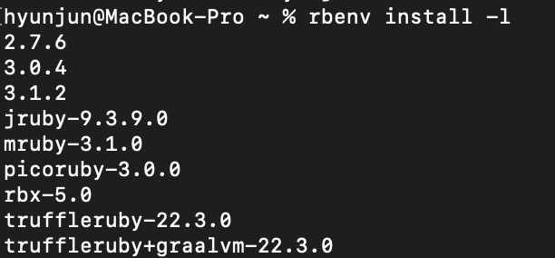

지킬 블로그 로컬 환경 만들기
- 2021, 맥북 프로 M1 Pro 14인치 모델
- Ventura 13.1
설치 목록.
이번에는 터미널 활용과, 로컬 서버 생성을 하기 위한 셋업 등을 알려드릴게요.
결론적으로 아래와 같은 것들을 설치해야 합니다.
- Homebrew
- rbenv
- ruby (맥은 기본적으로 깔려있지만, 다른 버전 설치해야 함)
- jekyll, bundler
Homebrew 설치
아래 링크에서 가이드 보고 설치하세요.
Homebrew
맥 터미널에서 아래의 명령어 치면 다운로드 된다.
/bin/bash -c "$(curl -fsSL https://raw.githubusercontent.com/Homebrew/install/HEAD/install.sh)"
이때 혹시 아래와 같은 에러가 난다면 (맥북 M1의 경우 무조건 나는 것 같아요.)
zsh: command not found: brew
아래의 명령어로 zshrc에 vi 에디터로 접근해서
vi ~/.zshrc
아래의 내용을 넣고 저장해 주면 된다.
eval $(/opt/homebrew/bin/brew shellenv)
이제 다시 아래의 명령어 입력해 다운로드하도록 하자. /bin/bash -c “$(curl -fsSL https://raw.githubusercontent.com/Homebrew/install/HEAD/install.sh)”
rbenv 설치
rbenv는 brew를 이용해 설치한다.
brew update
brew install rbenv ruby-build
rbenv versions로 설치되었는지 버전 확인
* system (set by /Users/yourname/.rbenv/version)
아마 위처럼 나올 것인데,
*표시가 현재 해당 시스템에서 사용하는 루비라는 뜻이다.
기존 맥은 시스템 루비가 깔려 있다.
하지만, 옛날 버전이고, 보안상의 이유로 사용을 권장하지 않는다.
그래서 rbenv로 다른 버전을 설치해 주어야 한다.
아래의 명령어로 설치 가능한 루비의 버전을 보자.
rbenv install -l
이런 식으로 나온다면 3.1.2 버전을 설치해 보겠다.
( 리스트의 버전 확인하고 다운로드하기! )

rbenv install 3.1.2
설치가 되면, 버전을 다시 확인한다.
rbenv versions
아래처럼 나온다면 설치는 완료, 버전을 변경해 보자.
* system
3.1.2 (set by/Users/yourname/.rbenv/version)
아래의 명령어로 맥 모든 곳에서 루비 3.1.2 버전을 사용하도록 바꿔준다.
rbenv global 3.1.2
확인.
rbenv versions
system
* 3.1.2 (set by/Users/yourname/.rbenv/version)
위처럼 바뀌었을 것이다.
이제 rbenv PATH를 추가해 주어야 한다.
쉘 설정 파일 (.zshrc or .bashrc)을 열어 다음의 코드를 추가해 주어야 한다.
M1맥북일 경우 .zshrc에 추가하면 맞을 것이다.
vi ~/.zshrc
맨아래에 추가
[[ -d ~/.rbenv ]] && \
export PATH=${HOME}/.rbenv/bin:${PATH} && \
eval "$(rbenv init -)"
적용
source ~/.zshrc
Jekyll, bundler 설치
루비를 받았기 때문에 아래의 gem 명령어로 jekyll과 bundler을 받을 수 있다.
gem install jekyll bundler
버전 확인
MacBook-Pro ~ % jekyll -v
jekyll 4.3.1
MacBook-Pro ~ % bundler -v
Bundler version 2.3.26
끝
결론적으로 루비로 지킬과 번들러를 설치해야 하는데
맥에 설치되어 있는 시스템 루비로 설치하면, 버전이 옛날 것이기도 하고
권한 문제로 인해 새로 까는 것이 더 빠르고 편리하다.
그렇기 때문에, homebrew를 받고, brew에서
루비 관리 시스템인 rbenv를 받아 루비를 설치하고
루비에 jekyll과 bundler를 받은 것이다.
- homebrew : 맥 OS용 패키지 관리자
- rbenv : 루비 버전 및, 설치 등을 도와주는 관리 시스템
- jekyll : 깃헙 설립자 중의 한 명이 Ruby 언어를 통해 개발한 프레임 워크이다.
정적 웹사이트를 만들게 도와주는 프레임워크 - bundler: 정확히 필요한 gem과 그 gem의 버전을 설치하고,
추적하는 것으로 일관성 있는 Ruby 프로젝트를 제공하는 도구다.
번들러는 종속성 관리를 위한 도구이다.
RubyGems가 이미 처리한 것 아닌가라고 물을 수 있다.
하지만 RubyGems는 gem 자체만을 위해서 종속성 처리를 한다.
당신의 일반 루비 애플리케이션은 gem으로 만들어진 게 아니므로 이 기능을 얻지 못한다.
이것이 번들러가 존재하는 이유이다.